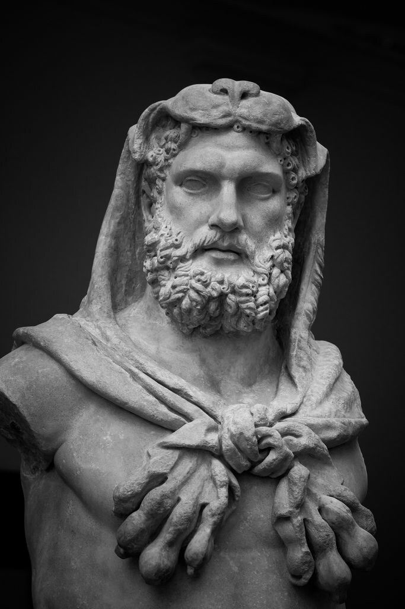
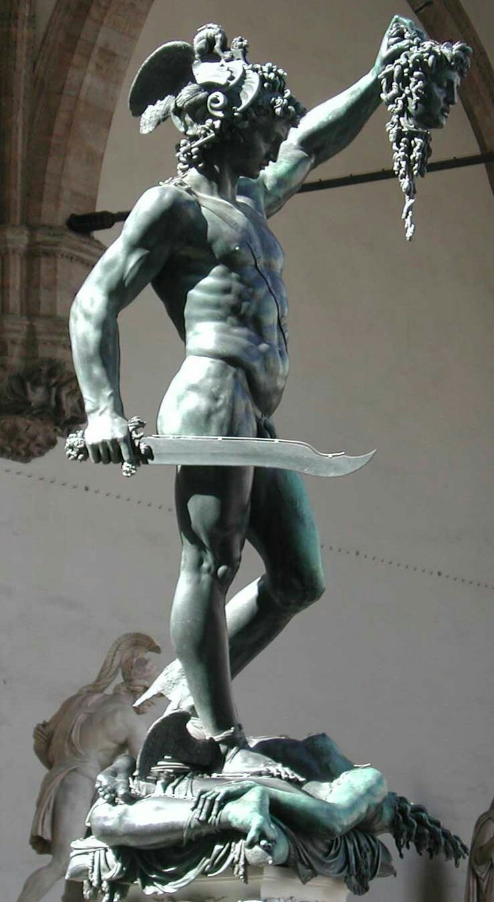
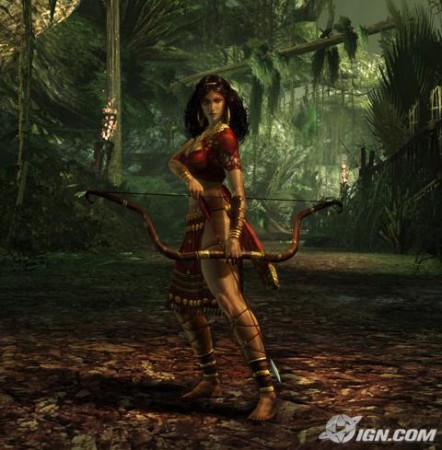

Semideuses
Herculés
Hércules foi um grande herói da Mitologia Grega. Filho de Zeus (deus dos deuses) e da mortal Alcmena, que era esposa de Anfitrião.
Segundo o mito, aproveitando o fato de Anfitrião estar ausente, em batalha, Zeus se caracterizou como ele, e se fez passar pelo mesmo. Ao retornar da batalha, Anfitrião descobriu a traição, e, irado construiu uma grande fogueira para queimar Alcmena viva. Zeus então, mandou nuvens de chuva para apagar o fogo, o que acabou fazendo com que Anfitrião aceitasse a situação. Hércules, portanto, nasceu do encontro de Zeus e Alcmena.
A deusa Hera, esposa de Zeus, enciumada pela traição, enviou duas serpentes para matar Hércules ainda no berço. Não teve exito, pois ainda bebê, Hércules estrangulou as serpentes com as próprias mãos.
Quando adulto, Hera provocou em Hércules um ataque de fúria, que o levou a matar sua esposa Mégara e seus três filhos. Como punição pelo crime, o oráculo de Delfos o incumbiu de doze tarefas de extremo risco. Essas tarefas são chamadas de “Os doze trabalhos de Hércules”. São eles:
Matar o leão de Neméia – Hércules o estrangulou.
Destruir um monstro de sete cabeças que cuspia fogo – o monstro era a hidra de Lerna, que Hércules matou.
Capturar a corça de Gerínia – Hércules a capturou viva, sendo que ela tinha chifres de ouro e pés de bronze.
Acabar com um javali selvagem gigantesco - Hércules capturou vivo o javali de Erimanto.
Limpar em um só dia o curral do rei Augeasos – Hércules limpou o estábulo que já não havia sido limpo nos últimos trinta anos, e no qual havia três mil bois.
Acabar com as aves do lago Estinfale – Hércules matou as aves antropófagas dos pântanos com flechas envenenadas.
Capturar um touro louco na ilha de Creta – Hércules capturou o touro vivo, apesar do mesmo lançar chamas pelas narinas.
Eliminar as éguas do rei Trácia – Hércules capturou as éguas antropófagas de Diomedes, domando-as.
Roubar o cinto de ouro da rainha Hipólita – Hércules conseguiu, após longas batalhas, obter o cinturão de Hipólita, rainha das guerreiras amazonas.
Capturar os bois selvagens de Gerião, da ilha de Eritéia – Hércules capturou o rebanho de bois vermelhos, após ter matado Gerião, que tinha três corpos.
Roubar as maçãs douradas das ninfas no jardim das Espérides – Hércules recuperou as três maçãs de ouro do jardim, por intermédio de Atlas.
Capturar o cão de três cabeças Cérbero, guardião dos portões do inferno – Hércules capturou o cão, que além das três cabeças, tinha cauda de dragão e pescoço de serpente.
Ao realizar as doze tarefas, além de se redimir pela morte de sua esposa e de seus filhos, Hércules conquistou a imortalidade.
Casou-se com Dejanira, que sem querer lhe causou a morte. Na condição de imortal, Hércules foi transportado para o Olimpo, onde se casou com a deusa da juventude, Hebe.

Perseu
A princesa Danai (ou Danae) era uma bela jovem. Seu pai, Acrísio, Rei de Argos, consultou um dia um oráculo que lhe disse que sua filha não deveria ser mãe. Segundo o oráculo, se ela tivesse um filho ele seria uma ameaça e poderia causar a morte de seu soberano.
Após o aviso do oráculo, Acrísio resolveu trancá-la numa torre bem alta, com o intuito de ninguém se apaixonar por ela. No entanto, Zeus, ao vê-la na Torre se apaixona por Danai.
Para encontrá-la ele se transformou numa nuvem dourada e foi ao seu encontro. Após a chuva dourada que recebeu, ela ficou grávida de Zeus. Dessa união nasceu Perseu.
Quando o pai de Danai ficou sabendo, resolveu pedir aos guardas para trancar a filha e Perseu numa arca e lançar no mar. Após dias na deriva, ambos foram encontrados por um pescador que lhes ofereceu abrigo e comida.
Perseu cresceu e se tornou um jovem muito forte. Assim, o rei Polidecto resolveu enviá-lo para enfrentar o monstro conhecido como Medusa.
Um dos maiores feitos de Teseu foi quando ele enfrentou a Medusa. Ela era uma mulher Górgona com cabelos de cobra. Todos que olhassem em seus olhos, ela tinha o poder de os transformar em pedra.
Para realizar esse feito, ele recebeu ajuda do Deus Hermes, que lhe emprestou suas sandálias voadoras. Além dele, a deusa Atena lhe ofereceu uma espada e um escudo.
Sem olhar em seus olhos e com o reflexo do monstro em seu escudo, ele consegue cortar a cabeça da Medusa.
Após conseguir matá-la, Perseu coloca sua cabeça num saco e retorna à casa. Na viagem de volta, ele se apaixona por Andrômeda, uma bela mulher que estava acorrentada no meio do mar.
Com ela teve oito filhos: Perseides, Perses, Alceu, Helio, Mestor, Sthenelus, Electrião, Gorgófona (sua única filha).
Por conseguinte, Perseu fundou a cidade de Micenas e governou Tirinto.

Atlanta
Atalanta era uma princesa da Arcádia. Seu pai, o rei da Arcádia, queria um filho, e quando Atalanta nasceu ele deixou-a em cima de uma montanha para morrer. Uma ursa amamentou e cuidou de Atalanta até que caçadores encontraram a ursa e mataram-na, e ela aprendeu a lutar e caçar como um urso o faria. Ela foi posteriormente entregue ao seu pai.
Atalanta, depois de ter crescido no deserto, tornou-se uma caçadora feroz e estava sempre armada. Ela fez um juramento de virgindade à deusa Ártemis. Quando dois centauros tentaram estuprá-la, Atalanta matou-os.
Quando Ártemis foi esquecida em um sacrifício pelo rei, ela ficou irritada e enviou um javali que devastou a terra, homens, gado e culturas impedido de ser semeada. Atalanta juntou Meleagro e muitos outros heróis famosos em uma caçada. Muitos dos homens ficaram zangados que uma mulher foi se juntar a caça, mas Meleagro desejou Atalanta, e convenceu-os a juntarem Atalanta na perseguição. Vários dos homens foram mortos antes de Atalanta chegar ao javali e tirar sangue. Depois, finalmente, Meleagro matou o javali com sua lança, e deu a pele de javali para Atalanta. Os tios de Meleagro se irritaram e tentaram tirar a pele de Atalanta. Em sua ira, Meleagro matou seus tios. Em luto dos tios de Meleagro, sua mãe queimou uma madeira que Átropos lhe dera e Meleagro morreu.
Após a caçada, Atalanta foi descoberta por seu pai. Ele queria que ela se casasse, mas Atalanta, desinteressada no casamento, concordou em casar com seus pretendentes apenas se poderia escapar a ela, embora armado, em uma corrida a pé. O rei concordou e muitos jovens morreram na tentativa, até que Melanion tentou. Ele pediu à deusa Afrodite para ajudá-lo e ela deu-lhe três maçãs douradas para lançar e Atalanta apanhá-las, a fim de retardar para baixo. Melanion jogou as maçãs a cada vez que Atalanta chegou perto dele e, desta forma veio a casar-se com Atalanta. Eles tiveram um filho, Parthenopaios, que foi um dos Sete contra Tebas. Zeus transformou Atalanta e Melanion em leões depois de terem feito amor em um de seus templos.
